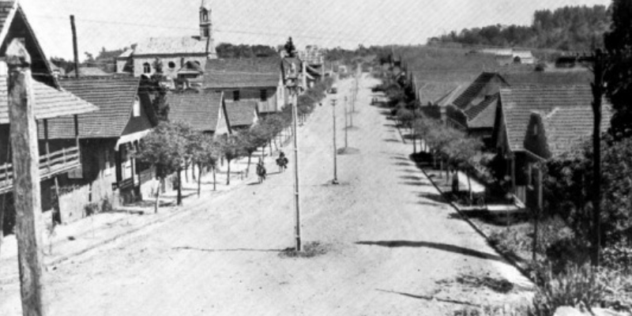
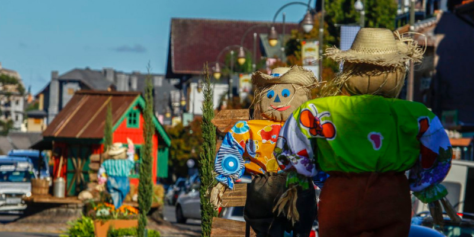
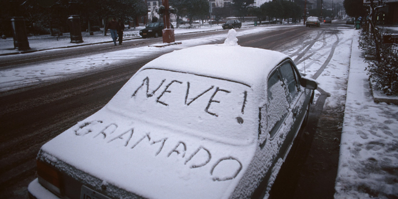
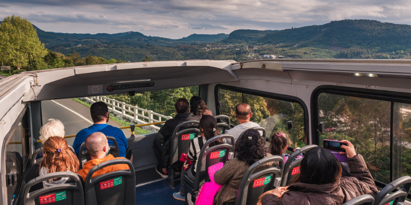
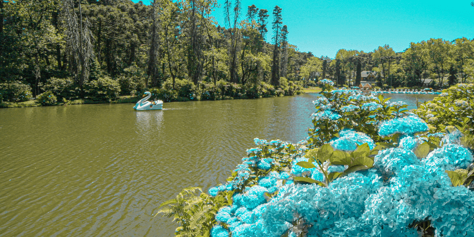
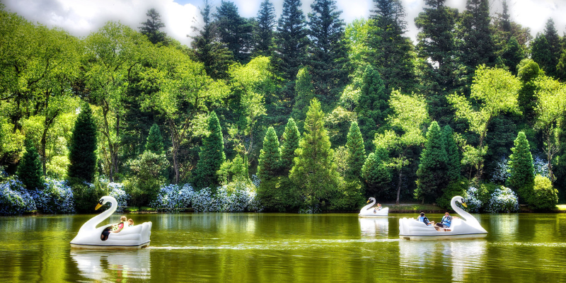
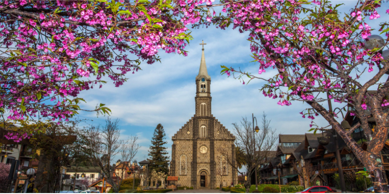
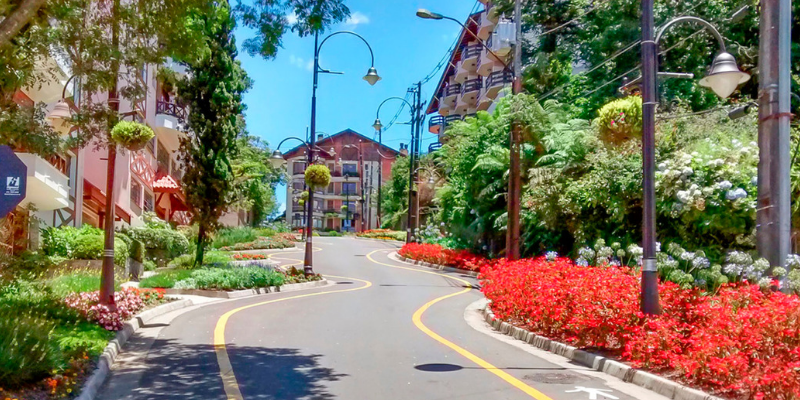
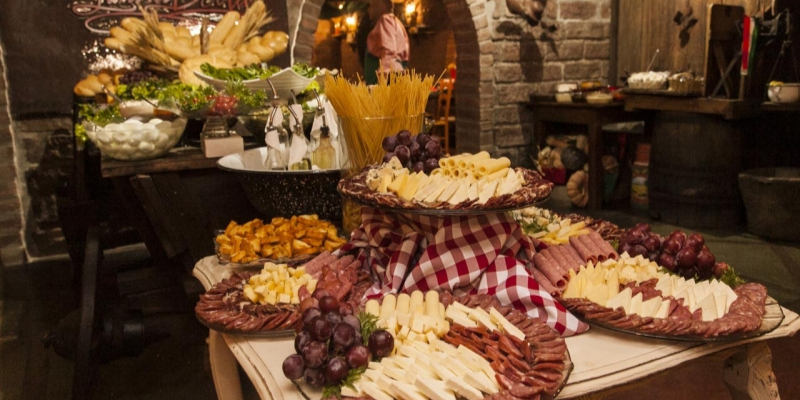

A cidade de Gramado começou como um povoamento de colonos. Os primeiros ocupantes da região foram José Manoel Corrêa e Tristão José Francisco de Oliveira, ambos de ascendência luso-açoriana. Eles se estabeleceram naquelas terras com suas famílias por volta de 1875. Mais tarde, chegaram imigrantes oriundos de países da Europa.

Pode-se atribuir o espírito turístico gramadense aos colonizadores. A região sempre acolheu bem quem vinha de fora. Além disso, há o clima de interior , onde todo mundo se conhece e se dá bem. Gramado é uma cidade segura e cheia de natureza. Apesar do bucolismo, também oferece uma rede hoteleira excelente, bem como opções gastronômicas e de lazer para todas as idades.

O mês de julho oferece as melhores condições para neve em Gramado. É nessa época que o frio está mais intenso, o que favorece o fenômeno natural. Quando os flocos não caem, pode haver geada, que torna as paisagens branquinhas logo pela manhã.

Essa linha de ônibus é a maneira mais prática de conhecer os pontos turísticos de Gramado. Você viaja num veículo de dois andares e percorre os quatro cantos do município. O passeio funciona no sistema hop-on, hop-off, então é possível embarcar e desembarcar nas paradas para prolongar a estada em determinados lugares.
|
  |
Com paisagens encantadoras, o lago virou cartão-postal de Gramado. É ótimo para caminhadas e piqueniques. Outro atrativo imperdível do local são os pedalinhos!

A imponente construção de pedra, com uma torre de 44 metros de altura , fica na Av. Borges de Medeiros, no coração de Gramado. As grandes celebrações ocorrem durante as festas de fim de ano. A igreja fica toda iluminada e serve de ponto estratégico para observar a queima de fogos do Réveillon .

A Rua Emilio Sorgetz fica na área central de Gramado. Ela ganhou o apelido de Rua Torta devido a suas curvas tortuosas. O formato inusitado e as flores que adornam o espaço lembram outra rua famosa: a Lombard Street, em São Francisco, na Califórnia (EUA).

A cozinha italiana também deixou sua marca na Região das Hortênsias. Os restaurantes são verdadeiras atrações turísticas de Gramado!
Clicando aqui, você pode se hospedar nos melhores hotéis da cidade!
➜ Hospede Agora!